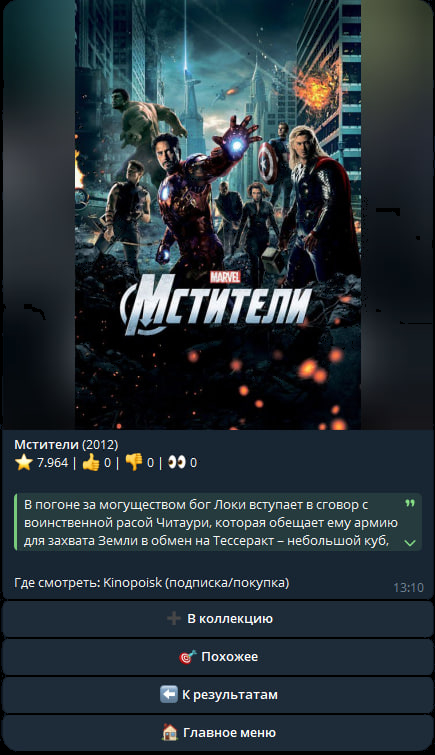

О боте

Каждый вечер мы тратим кучу времени на то, чтобы выбрать, что посмотреть. КиноБот решает эту проблему за пару кликов!
Это удобный инструмент внутри мессенджера Telegram, созданный для того, чтобы избавить вас от долгих поисков на сайтах. Бот работает быстро, всегда под рукой и не требует установки дополнительных приложений на телефон.
Возможности

Бот обладает всем необходимым функционалом для киномана:
- 🎲 Рандомный подбор: Не знаете, что посмотреть? Нажмите одну кнопку, и бот сам предложит случайный, но качественный фильм.
- 💾 Коллекция сохраненных: Добавляйте понравившиеся фильмы в личное избранное (Watchlist), чтобы посмотреть их позже.
- 🎯 Рекомендации на основе лайков: Бот анализирует ваши предпочтения и с каждым разом советует картины, которые точно вам понравятся.
Разработчик

Данный Telegram-бот и лендинг разработаны в рамках дипломного проекта.
- Автор: Чуреев Максим
- Учебное заведение: КЭСИ
- GitHub: @kle1gmc
Запуск бота
Готовы найти идеальный фильм на вечер? Бот абсолютно бесплатен и работает 24/7.
Нажмите на кнопку ниже. У вас откроется приложение Telegram — просто нажмите кнопку «Запустить» (или /start) в самом низу экрана.